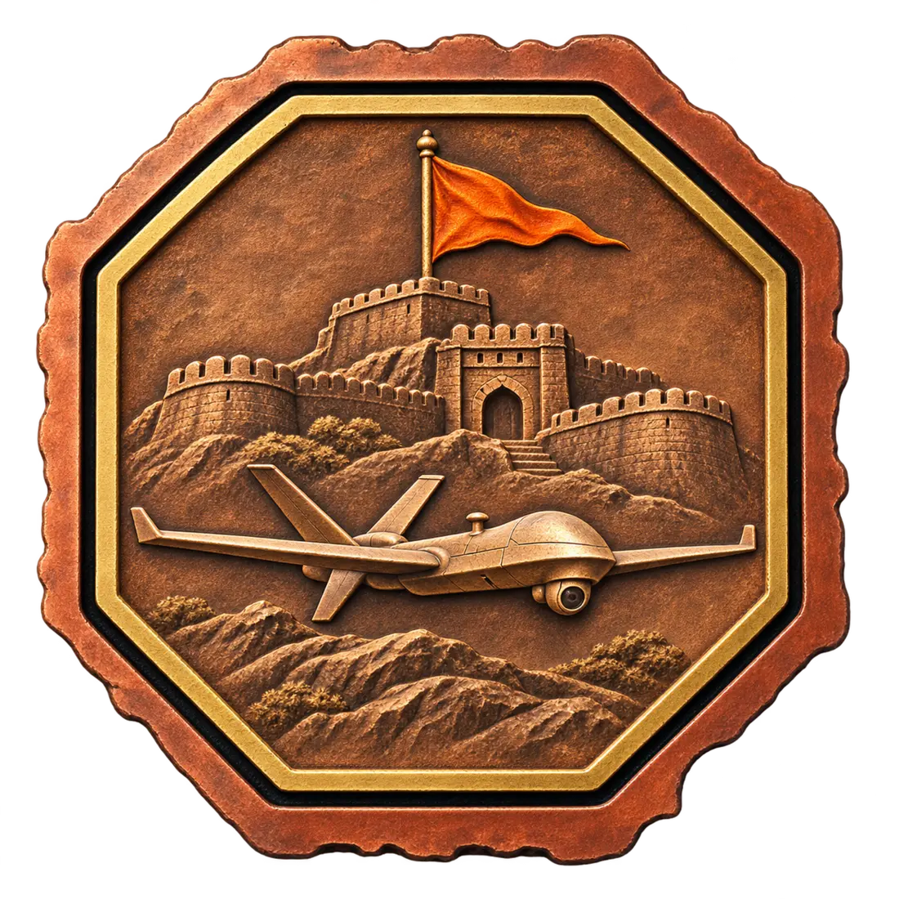
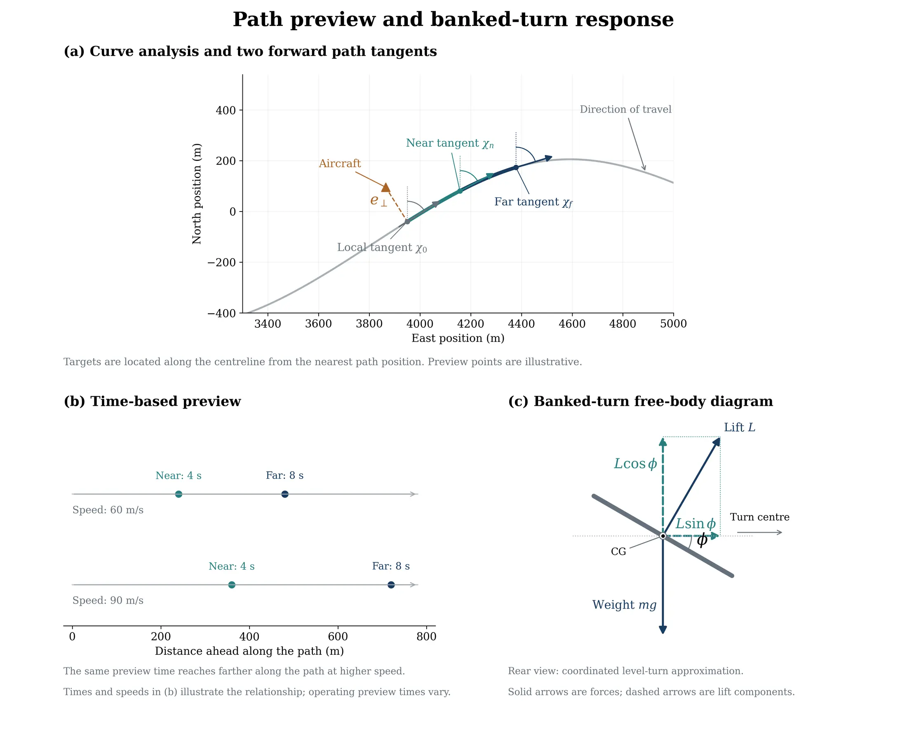
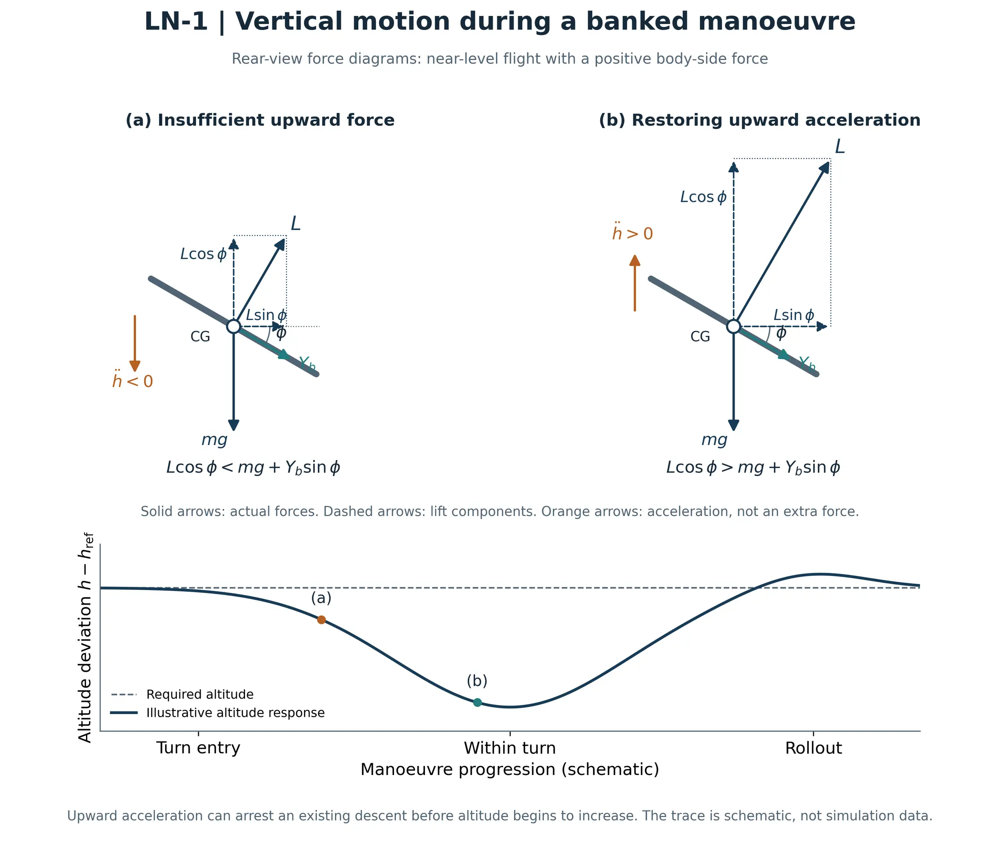
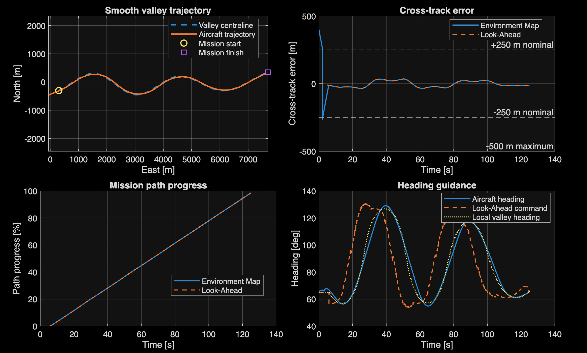
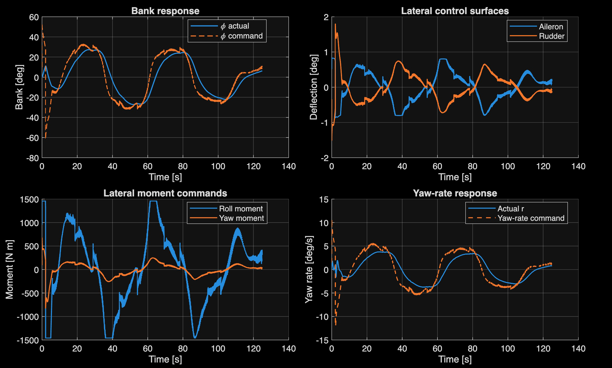
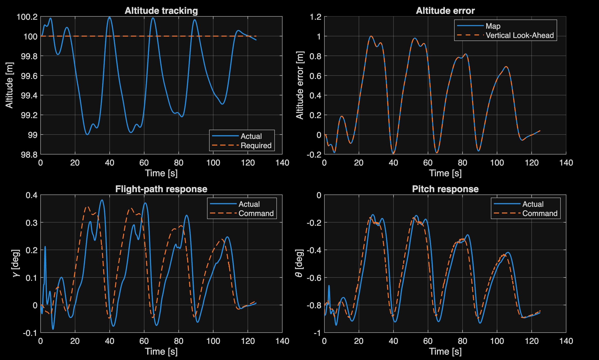
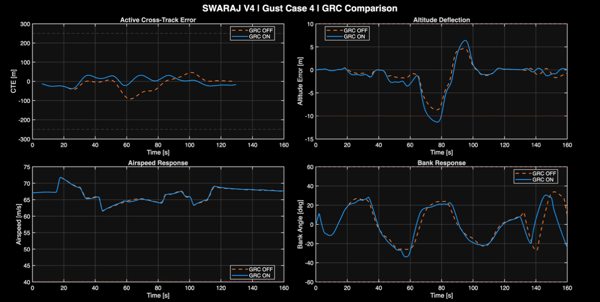

Read the route
A mathematical environment map defines the centreline, cross-track displacement and approaching tangent headings.
System for Warfare Autonomous Reconnaissance and Adaptive Judgment
Self-governance, translated into autonomous flight.
An original integration of mapped-route anticipation, behavioural supervision, aircraft banking and energy-aware flight control—developed and evaluated using a nonlinear six-degree-of-freedom Cessna 182 model.

Inspired by Hindavi Swarajya, the idea of self-rule and independent decision-making, SWARAJ brings that philosophy into a modern flight-control problem: how can an aircraft interpret what lies ahead and coordinate its own response?
The heritage-inspired insignia brings a Maratha fort and Bhagwa together with an unmanned aircraft. The research itself focuses on the mathematics and engineering required to transform environmental information into controlled flight behaviour.
SWARAJ's Look-Ahead formulation examines the mapped route at near and far preview positions. Their tangent directions describe both the immediate path requirement and the geometry that follows. Guidance can therefore prepare for changing curvature instead of waiting for the aircraft to drift off course.

A mathematical environment map defines the centreline, cross-track displacement and approaching tangent headings.
Near and far preview horizons make the upcoming turn part of the present guidance decision.
Banked Dynamics connects route anticipation to feasible heading, roll and vertical-support requirements.
When the aircraft banks, the same lift vector must provide both lateral turning force and vertical support. SWARAJ coordinates these competing demands through Banked Dynamics and its lateral and longitudinal control paths.

Bank converts a component of lift into horizontal turning force. In the ideal coordinated, level-turn approximation, this is the basis of the turn-radius and bank-demand relationships used in guidance.
Bank reduces the upward lift component. Longitudinal supervision anticipates this requirement, while pitch and energy control help regulate altitude and airspeed through successive turns.
The project connects geometric guidance with behavioural decisions and the physical control of an aircraft. Each layer has a defined role, with aircraft-state feedback closing the loop.
Centreline geometry, route progress and cross-track position
Near/far preview, heading intent and behaviour selection
Required turn response, bank support and manoeuvre preparation
Aileron, rudder, elevator and throttle with energy supervision
The architecture is a functional summary. Detailed controller equations, supervisory interfaces and gust-recovery logic are documented in the PDR.
The selected configuration was evaluated for 125 seconds in the nonlinear Cessna 182 model at a 100 m altitude reference, with nominal atmospheric conditions and the revised Energy/Throttle Controller.



Atmospheric disturbance cases were run with supplementary Gust Recovery Controller (GRC) intervention disabled and enabled. The comparisons make its effect on trajectory tracking measurable across longitudinal, lateral, vertical and combined wind schedules.
Reduction in peak cross-track error during the combined disturbance case
91.526 m without GRC → 37.820 m with GRC.
Reduction in peak cross-track error during the lateral disturbance case
83.104 m without GRC → 44.979 m with GRC.

| Wind schedule | Peak CTE, OFF → ON | Peak altitude error, OFF → ON |
|---|---|---|
| Longitudinal | 42.307 → 37.820 m | 2.140 → 1.744 m |
| Lateral | 83.104 → 44.979 m | 1.866 → 3.354 m |
| Vertical | 34.802 → 34.802 m | 7.897 → 10.502 m |
| Combined | 91.526 → 37.820 m | 8.672 → 11.333 m |
All figures are reported PDR results. The vertical and combined GRC-enabled cases motivate the next phase of longitudinal recovery refinement.
Future work grows the validated simulation framework toward a more capable and aircraft-aware guidance architecture.
Extend preview and mission management to diverse route geometries, terminal guidance and geographical terrain data.
Coordinate bank demand with speed, available load-factor margin, energy management and predictive gust response.
Progress from mapped mathematical routes toward sensor-integrated navigation, hardware-in-the-loop testing and aircraft adaptation.
Read the full 94-page personal PDR for methodology, free-body diagrams, mathematical derivations, controller tuning, validation histories, literature references and future development. The original academic report is preserved unchanged.
Independent work by Ninad Samrat Bhave · November 2026 · MATLAB / Simulink